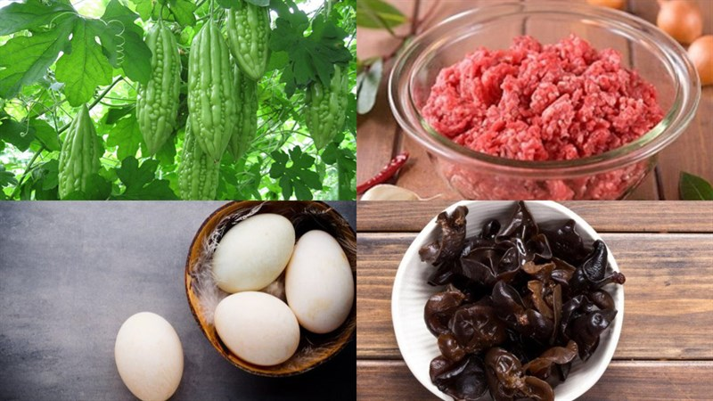
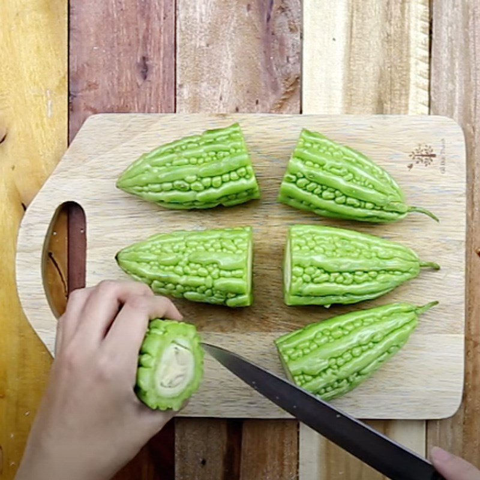
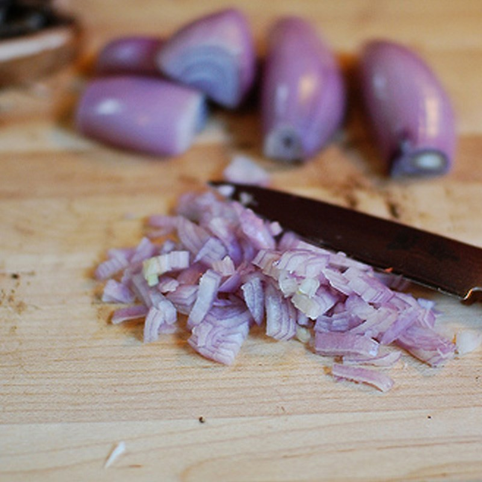
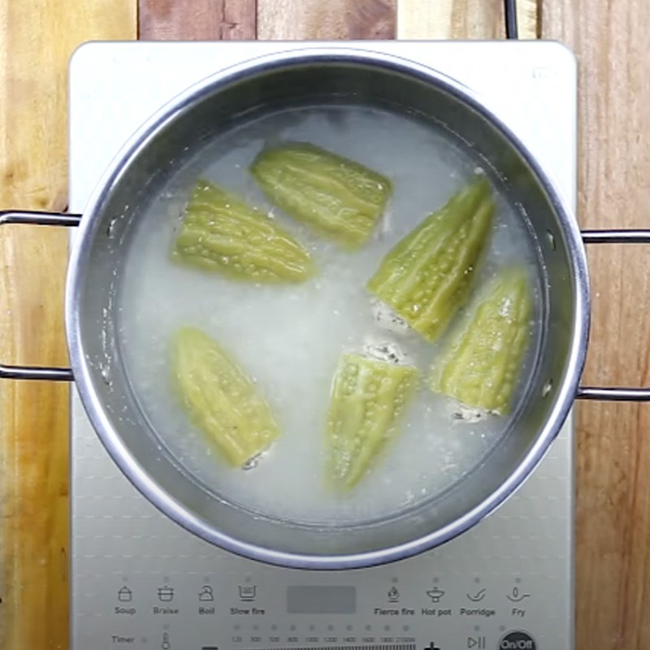
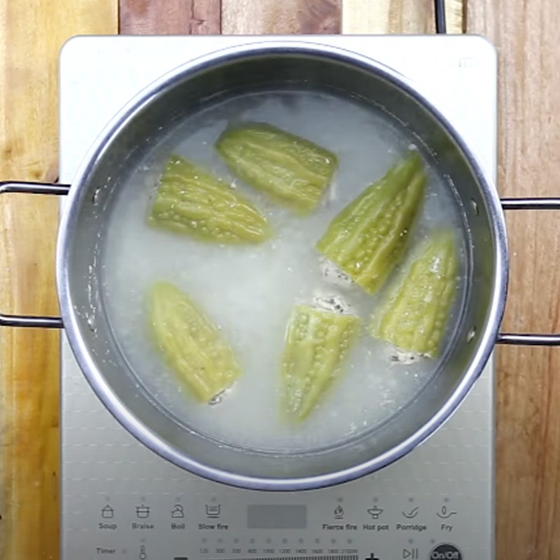
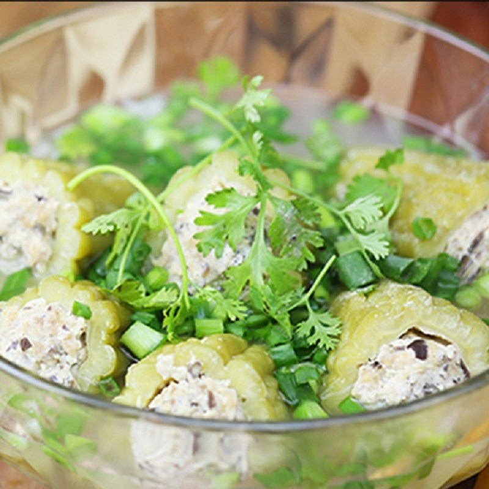

- Khổ qua (mướp đắng): 3–4 trái
- Thịt heo xay: 200–300 g
- Mộc nhĩ (nấm mèo): 2 tai
- Miến dong, hành tím, hành lá, ngò rí, gia vị: tuỳ khẩu phần và khẩu vị
- Khổ qua rửa sạch, cắt khúc dài 5–6 cm, dùng muỗng lấy hết ruột và hạt.
- Ngâm khổ qua trong nước muối loãng khoảng 10–15 phút, sau đó rửa lại để giảm vị đắng.
- Mộc nhĩ và miến ngâm nước cho nở, băm nhỏ.
- Hành tím băm nhuyễn.
 - Trộn thịt heo xay với mộc nhĩ, miến, hành tím.
- Nêm muối, hạt nêm, tiêu, một ít nước mắm cho vừa ăn.
- Trộn đều cho nhân dẻo.
- Nhồi nhân thịt vào từng khúc khổ qua, không nén quá chặt để khi nấu nhân không bị cứng.


- Đun sôi nồi nước, thả khổ qua đã nhồi vào.
- Hạ lửa vừa, nấu khoảng 25–30 phút cho khổ qua mềm và nhân chín.
- Nêm nếm lại cho vừa miệng.
 

- Rắc hành lá, ngò rí cắt nhỏ và một ít tiêu lên trên, tắt bếp.
- Canh dùng nóng, nước trong, vị đắng nhẹ hòa với vị ngọt của thịt.
HƯỚNG DẪN CÁCH LÀM CHI TIẾT TẠI ĐÂY.
12A4_N1_D2
Ngày cập nhật nội dung gần nhất: 19/01/2026
Tham khảo từ các nguồn như: Chatgpt.com, amthucvn.com, google.com, giatrinhbakery.com.vn, ...